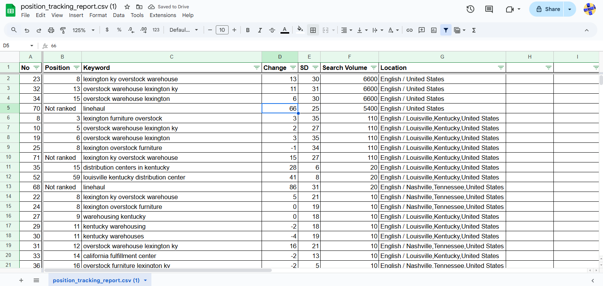
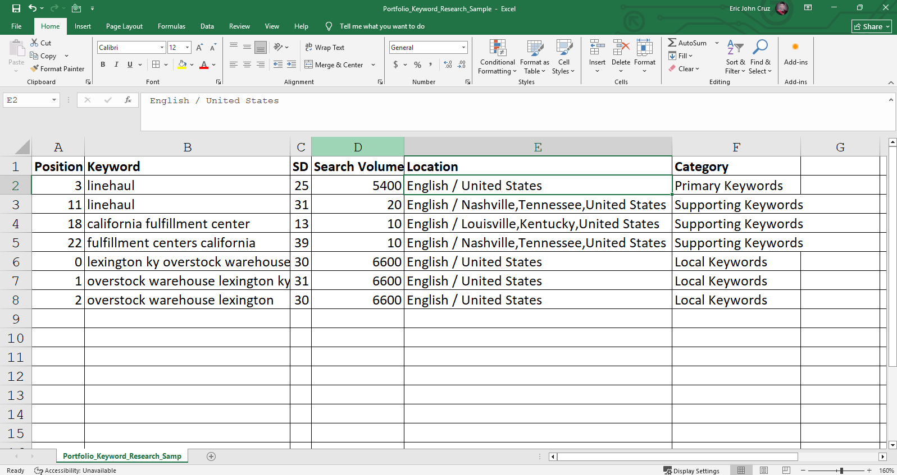
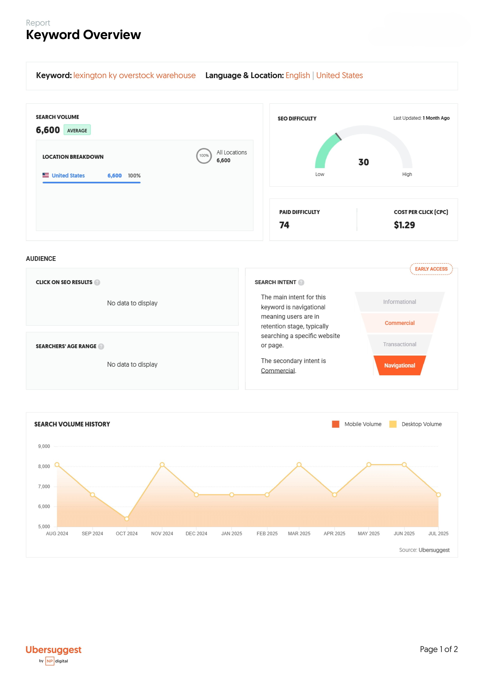

Coverage gaps
Identify services, locations, questions, and topics competitors cover more effectively.
I use search demand, audience context, competitor activity, and business priorities to decide where a website can improve visibility and what content deserves attention first.
Keyword research becomes useful when it helps decide what to build, improve, combine, or deprioritize.




Content planning starts with the audience, the question they are trying to answer, the business goal, and the role of the page in the wider site.
I compare competitors to find practical opportunities in page coverage, local reach, content depth, backlinks, visibility, and user experience.
Identify services, locations, questions, and topics competitors cover more effectively.
Compare keyword and backlink patterns to find areas where the business can strengthen its presence.
Translate research into a short list of pages, links, content, or improvements worth acting on next.
I use tools such as Ubersuggest, Google Sheets, project documentation, analytics, and competitor research to support decisions. AI can help accelerate parts of research and drafting, but the final judgment stays with the marketer.